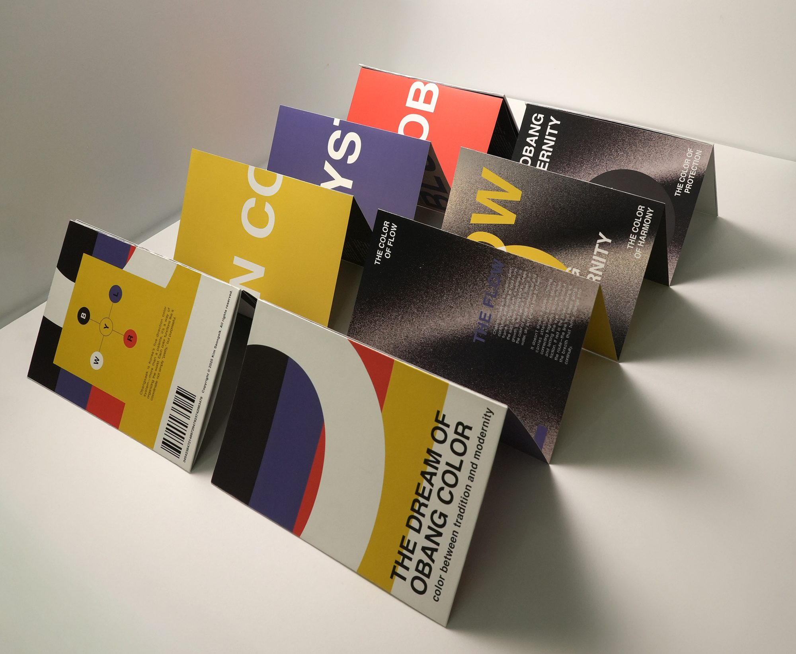
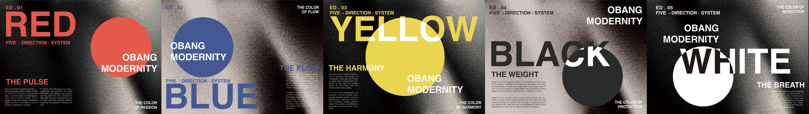
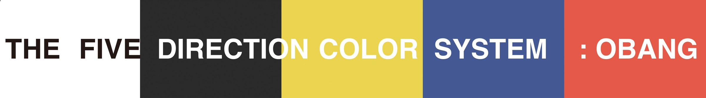
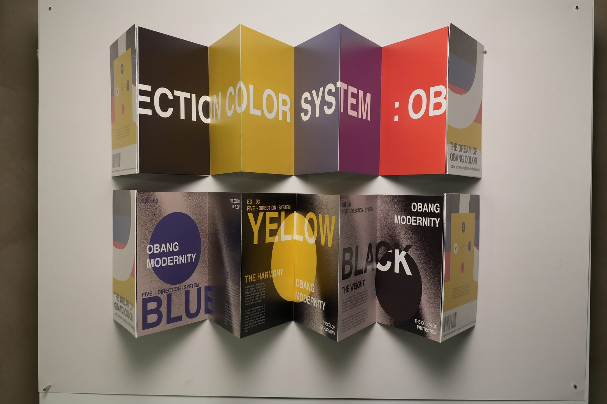
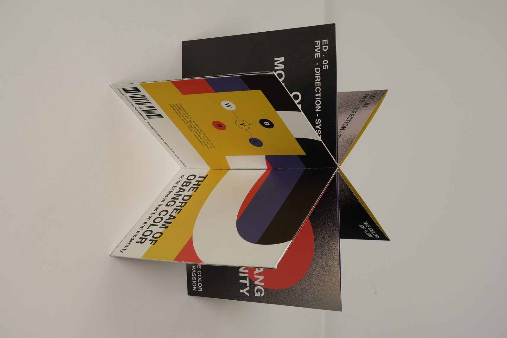
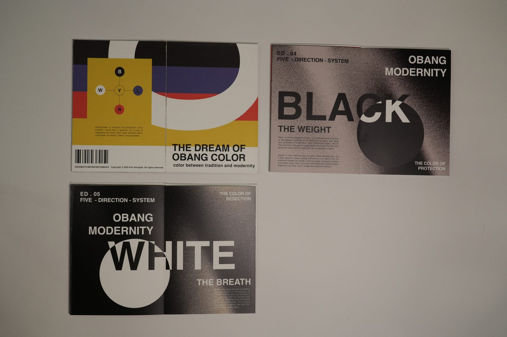
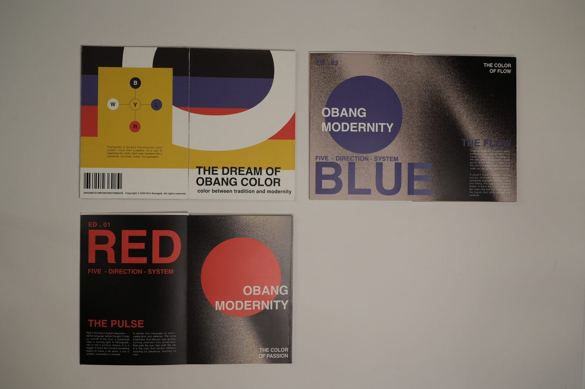

Personal project
The Dream of Obang Color
An accordion book that reads Jan Tschichold’s The New Typography through Obangsaek, the five traditional Korean colors.

Overview
This accordion book reinterprets Jan Tschichold’s The New Typography through Obangsaek, the five traditional Korean colors.
Each color occupies its own section, showing its symbolic meaning through a modern typographic structure. The cover sums it up: color between tradition and modernity.
The book
-

Five colors, five sections
Red, The Pulse. Blue, The Flow. Yellow, The Harmony. Black, The Weight. White, The Breath. Each color sits as a solid circle over a grainy black field.
-

One long line
Unfolded, a single line of type runs across the panels: The Five Direction Color System: Obang.
-


Flat or folded
Hung flat, the panels read as one strip. Folded into a star, the same panels turn into an object.
-


Spreads
Each spread sets a big color word and a circle in that color, numbered ED. 01 to ED. 05.